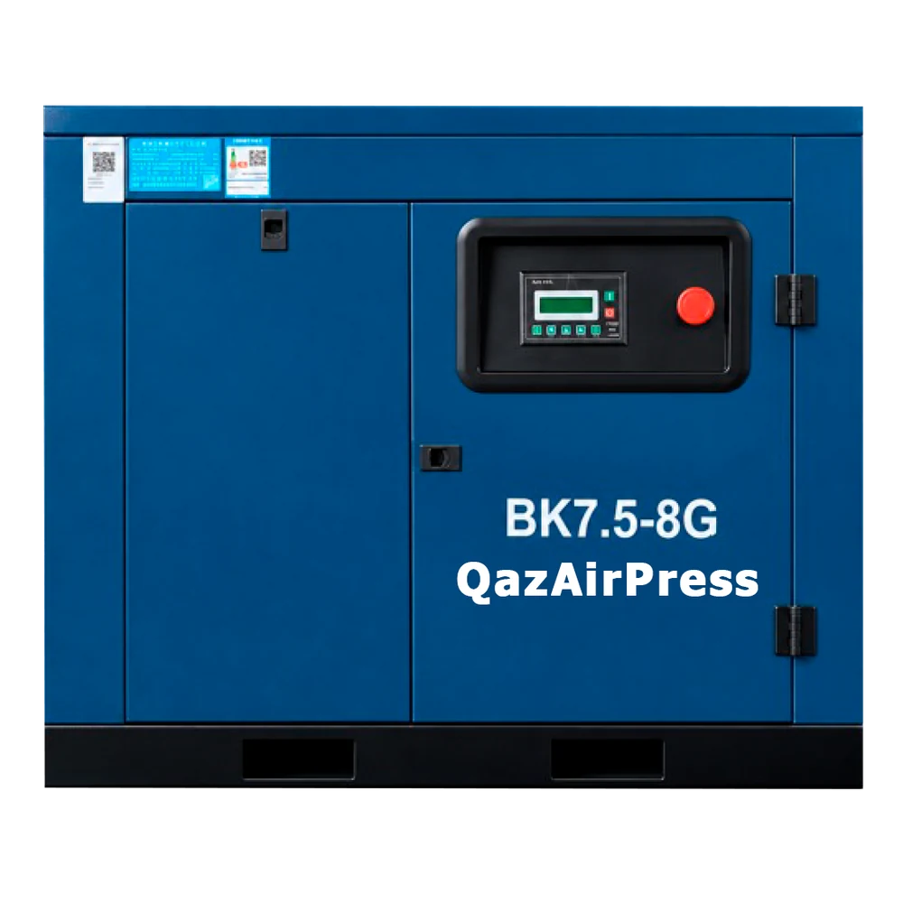
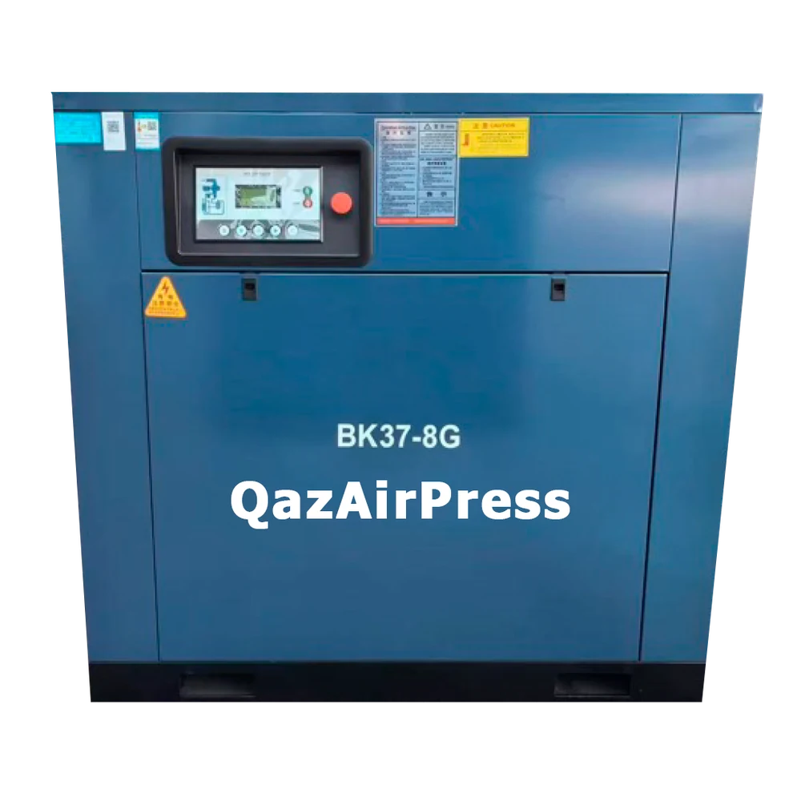
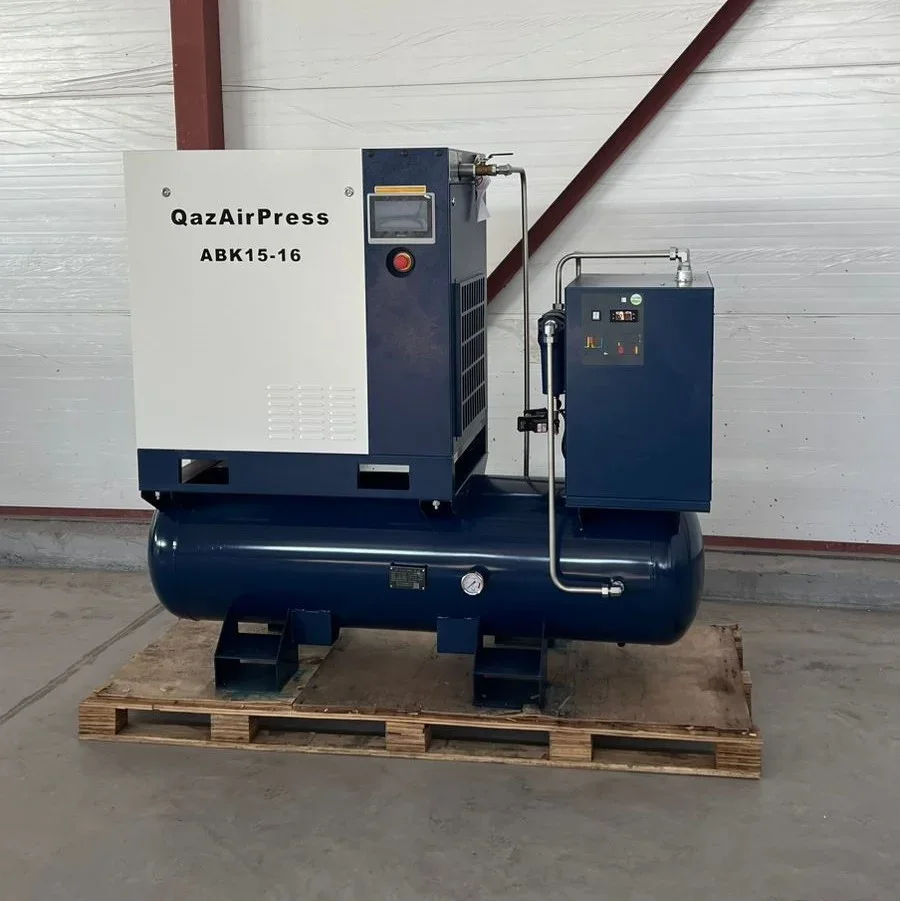
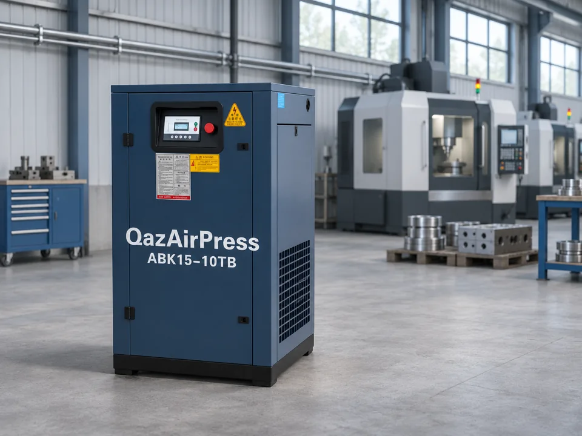

Винтовые компрессорыПромышленный сжатый воздух / КазахстанСжатый воздух
Сжатый воздух
для вашего
производства.
Подберём винтовой компрессор 7,5–75 кВт для ваших станков и рабочих смен. Поможем с ресивером, осушителем и фильтрами. Рассчитаем поставку в любой регион Казахстана.
7,5–75 кВтмощность компрессоров
1,18–13 м³/минрасход воздуха по каталогу
QAZAIRPRESS / ОБОРУДОВАНИЕ

ВИНТОВОЙ КОМПРЕССОРABK37-8TB
37 кВт / 6 м³/мин / 8 атм↗Подбор под ваши станки и нагрузкуКомпрессоры, подготовка воздуха и расходникиРасчёт доставки по Казахстану
01 / ОборудованиеВсё для подачи
Всё для подачи
и подготовки воздуха
Подберём компрессор, запас воздуха и очистку под требования оборудования. Поможем найти расходники для обслуживания.
02 / Модели и характеристикиКакой компрессор
Какой компрессор
нужен вашему цеху?
Сравните мощность, расход и давление. Не знаете нужных значений? Расскажите о станках — поможем с подбором.
Весь каталог · 23 позиции ↗ Винтовые компрессоры
Винтовые компрессоры
Винтовые компрессорыКомпрессор для лазерного станка ABK15-16
15кВт
1,18м³/мин
16атм
Цена по каталогу*2 400 000 ₸
↗* Цены сверены с карточками QazAirPress на Satu.kz 17.11.2026. Актуальные цена, наличие и комплектация подтверждаются в КП.
03 / ПрименениеСжатый воздух
Сжатый воздух
для вашей отрасли.
У каждого производства свои требования. Начнём с ваших станков и условий работы.

01 / ПРИМЕНЕНИЕ
Металлообработка
Воздух для пневмоприводов станков, инструмента и продувки деталей. Подберём расход с учётом того, сколько оборудования работает одновременно.
Расход и стабильное давлениеКомпрессоры для цеха ↗
02 / ПРИМЕНЕНИЕ
Лазерная резка
Подберём компрессор и подготовку воздуха по требованиям вашего станка: давление, расход, сухость и чистота.
Сухой и чистый воздух для станкаДля лазерного станка ↗03 / ПРИМЕНЕНИЕ
Бетон и ЖБИ
Воздух для пневмоцилиндров, заслонок и автоматики линии. Учтём пиковый расход и условия размещения компрессора.
Запас на пиковую нагрузкуПодобрать для производства ↗Иллюстрации созданы с помощью ИИ на основе фотографий моделей QazAirPress. Они показывают возможное применение оборудования; состав и условия установки подбираются для вашего производства.
04 / Система целикомСтанкам нужен воздух.
Станкам нужен воздух.
С нужным давлением и чистотой.
Одного компрессора может быть недостаточно. Подберём запас воздуха, осушение и фильтры, чтобы система отвечала требованиям ваших станков.
- 01
Компрессор
Подаёт воздух с нужным расходом и давлением.
- 02
Ресивер
Создаёт запас на короткие пики потребления.
- 03
Воздухоподготовка
Убирает влагу и загрязнения до нужного уровня.
- 04
Производство
Получает подготовленный воздух для работы станков.
05 / Подход к работеПоможем разобраться
Поможем разобраться
до покупки.
Не обязательно приходить с готовым техническим заданием. Достаточно рассказать, какое оборудование должно работать и в каких условиях.
Узнать о QazAirPress ↗Подберём под нагрузку
Учтём расход и давление станков, их одновременную работу и длительность смен.
Поможем с комплектацией
Разберёмся, нужны ли ресивер, осушитель и дополнительные фильтры.
Найдём расходные материалы
Сверим артикулы и размеры фильтров, сепараторов и других элементов.
Согласуем условия заранее
Уточним состав заказа, гарантию и доставку до того, как вы примете решение.
06 / Доставка по КазахстануДоставим оборудование
Доставим оборудование
в ваш регион.
Работаете в Астане, Алматы, Шымкенте или в области? Укажите город и нужную модель — рассчитаем стоимость и согласуем срок поставки.
Условия и регионы доставки ↗17областей3города республиканского значения
АстанаАлматыШымкентКарагандаАктобеПавлодарАктауУсть-Каменогорск
Для точного расчёта понадобятся адрес, состав заказа и условия разгрузки.
07 / Сервис и расходные материалыПоможем обслуживать
Поможем обслуживать
ваш компрессор.
Нужна замена масла, фильтра или сепаратора? Пришлите модель компрессора и маркировку элемента. Если оборудование работает с ошибкой — опишите, что происходит.
Возможность выезда, перечень работ и сроки согласуем для вашего оборудования и города.
Обсудить обслуживание08 / Вопросы перед покупкойЧто важно знать
Что важно знать
перед заказом
Как выбрать компрессор, проверить комплектацию и получить расчёт поставки.
Как понять, какой компрессор нужен моему цеху?
Нужны расход и давление каждого станка, а также понимание, какие из них работают одновременно. Если этих данных нет, пришлите список оборудования или фото шильдиков. Поможем собрать исходные параметры и подобрать модель.
Достаточно ли выбрать компрессор по мощности в кВт?
Нет. При одинаковой мощности модели могут давать разный расход при разном давлении. Начните с потребностей станков, а затем сравните производительность компрессора и условия её измерения.
Что нужно учесть для лазерной резки?
Попросите у изготовителя станка требования к давлению, расходу, точке росы, частицам и остаточному маслу. По ним подбираются компрессор и подготовка воздуха. Один только осушитель ещё не гарантирует, что воздух подойдёт лазеру.
Как узнать окончательную цену и срок поставки?
Напишите модель, количество и город доставки. Уточним наличие, комплектацию, стоимость оборудования и перевозки. Состав заказа, срок, оплату и гарантийные условия согласуем до покупки.
Как заказать фильтр или сепаратор без ошибки?
Пришлите модель компрессора, артикул старого элемента и фото маркировки. Для некоторых позиций понадобятся размеры и данные о подключении. Проверим совместимость до заказа.
Почему давление в карточках указано в атм, а в форме — в бар?
В карточках сохранены единицы технической таблицы продавца. Бар и стандартная атмосфера немного различаются: 1 атм = 1,01325 бар. Укажите требования станка в его единицах; перед подбором уточним также, избыточное это давление или абсолютное.
Какая гарантия на оборудование?
Условия зависят от модели и исполнения. Перед покупкой согласуем гарантийный срок, начало его отсчёта, состав поставки и требования к обслуживанию. Эти условия должны быть зафиксированы в предложении и договоре.
09 / Запрос предложенияПолучите подбор
Получите подбор
и расчёт стоимости.
Напишите, какие станки нужно обеспечить воздухом и куда доставить оборудование. Если параметры неизвестны, просто опишите задачу.
+7 776 171 7111Подбор оборудования и согласование поставки по Казахстану.